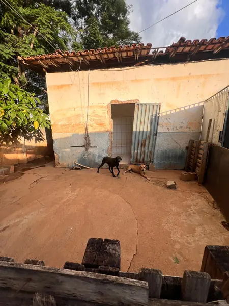
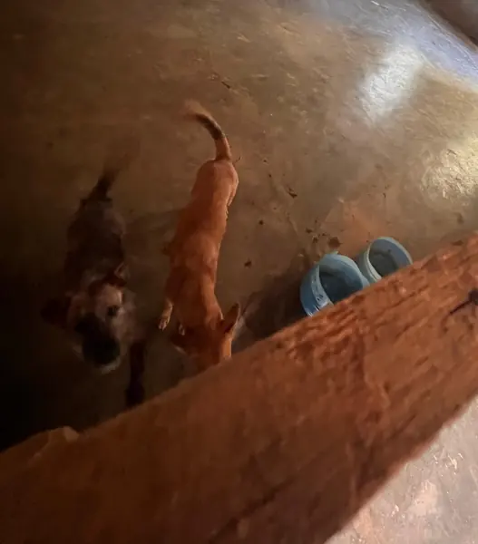

- Início
- Resgates
Resgates que mudaram destinos
Cada foto de "depois" só existe porque alguém denunciou, alguém foi buscar e alguém doou. Conheça algumas dessas histórias.
Carregando resgates…
Viu um animal em risco?
Como fazer uma denúncia
Quanto mais informação, mais rápido conseguimos agir.
- Foto ou vídeo do animal e do local
- Endereço ou ponto de referência
- Estado do animal: ferido, preso, sem comida ou água
- Seu contato, para tirarmos dúvidas (seu nome não é divulgado)
Maus-tratos são crime
Lei 9.605/98, art. 32. Para cães e gatos, a pena é de 2 a 5 anos de reclusão (Lei 14.064/2020).
Avisar a ONG no WhatsAppDenúncia anônima: ligue 181 (Disque Denúncia MG)
Em flagrante, chame a Polícia Militar pelo 190.
Nossa rotina
Galeria
Fotos do dia a dia da ONG e dos animais que cuidamos.



